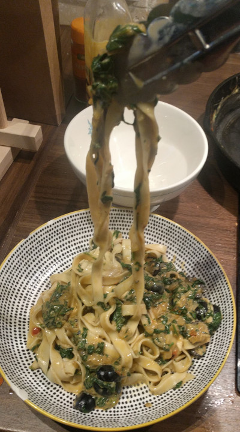

Spinach Pasta

Home made pasta in a spinach and cream sauce
I just got a new pasta machine so decided to try it out.
The sauce is really just a vehicle to showcase the pasta, which I've
never made before
Ingredients
For the pasta
- 100g 00 flour
- 1 large egg
- salt
For the sauce
- half a small white onion, minced
- ~10 black olives, halved
- handful of spinach
- 50ml whole milk
- 70ml cream
- 2tsp butter
- 2 tsp flour
- 2 cloves of garlic, minced
- Half a chicken stock pot
- Slice of lemon
Instructions
For the pasta
- Create a mound of the flour on a clean surface, add a pinch of salt
- Create a crator in the flour large enough to hold the egg
- Crack the egg in the crator
- Mix the flour in to the middle until the egg is completely incorporated
- Knead until solf and silky (at least 15mins)
- Shape in to a ball and leave, covered, for at least 30 mins to relax
- After relaxing, put through pasta machine and leave to dry a little.
- Cook in boiling, heavily salted water for 2mins
For the sauce
- Place skillet over a medium heat and melt butter
- Put the spinach in a colinder and pour over boiling water to wilt. Leave to cool until safe to touch.
- Add onion and cook until transluscent
- Add the garlic and olives, cook for ~ 1 min
- Add flour and cook out, ~ 1 min
- Slowly add the milk, stirring constantly until a smooth paste is formed
- Add in the cream and stock pot
- Squeeze out excess water from spinach and finely chop. Add to sauce.
- Add in the pasta along with some of the lovely pasta water, stir
- Add a squeeze of lemon and season to taste
Return to main page